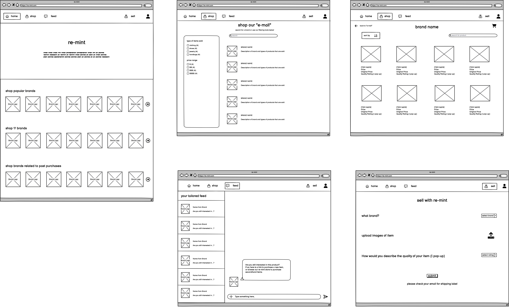
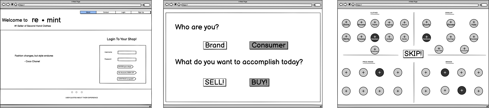
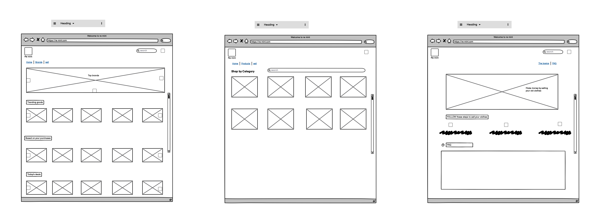

Re-mint lets fashion brands set up official secondhand marketplaces so their customers can buy and sell directly with each other.
We help brands monetize their resale market. We offer revenue share on transaction fees and use the transaction data to drive new sales. For example, if an Everlane customer sells her jeans because they are too small, we retarget her to purchase the larger size from Everlane's main e-commerce website.
Problems to Solve
Scamming: people currently on secondhand clothing sites such as Poshmark or Mercari may sell fake brand items
Lack of personalization: on current brand websites, there is little direct interaction with customers after they buy their products
Sustainability: buying clothes and reusing them helps the environment and reduces the number of clothes that ends up in landfills
Storage: people are able to get rid of the unwanted clothes they have in their homes
Financial: consumers are able to buy brand clothes at a more affordable price by buying secondhand
Target Users
old/returning users of the featured brands
new users who can casually scroll through the website
users who don’t want to spend too much money on clothing and would buy secondhand
users who want to earn extra money by selling their old clothes
users who don’t have the time to go to or get overwhelmed by thrift stores or secondhand stores that are not organized by brand
users who would prefer to online shop on desktop and like to have more choices on their screens at once
users with disabilities or visual impairments who prefer using computers to online shop or do online tasks
users in need of outfits for special occasions but who are not able to travel to a specific store due to location/transportation issues
users who have physical disabilities that make it difficult to travel to a physical store
Re-mint lets fashion brands set up official secondhand marketplaces so their customers can buy and sell directly with each other.
We help brands monetize their resale market. We offer revenue share on transaction fees and use the transaction data to drive new sales. For example, if an Everlane customer sells her jeans because they are too small, we retarget her to purchase the larger size from Everlane's main e-commerce website.
Problems to Solve
Scamming: people currently on secondhand clothing sites such as Poshmark or Mercari may sell fake brand items
Lack of personalization: on current brand websites, there is little direct interaction with customers during the shopping process and after they buy their products
Sustainability: buying clothes and reusing them helps the environment and reduces the number of clothes that ends up in landfills
Storage: people are able to get rid of the unwanted clothes they have in their homes
Financial: consumers are able to buy brand clothes at a more affordable price by buying secondhand
Target Users
old/returning users of the featured brands
new users who can casually scroll through the website
users who don’t want to spend too much money on clothing and would buy secondhand
users who want to earn extra money by selling their old clothes
users who don’t have the time to go to or who get overwhelmed by thrift stores or secondhand stores that are not organized by brand
users who would prefer to online shop on desktop and like to have more choices on their screens at once
users with disabilities or visual impairments who prefer using computers to online shop or do online tasks
users in need of outfits for special occasions but who are not able to travel to a specific store due to location/transportation issues
users who have physical disabilities that make it difficult to travel to a physical store
We chose desktop because it will allow more features to be displayed on the website and make features on the website more accessible due to the larger screen size. Also, it would help users feel more comfortable making online purchases as we learned through our user interviews that people feel more confident making online purchases through desktop.
Overall, we felt the most confident designing re-mint for desktop devices because we feel that it can benefit the most amount of users.
However, we do recognize the limitations of choosing desktop: users who do not have computers may not have access, casual/frequent users may prefer using phones for a convenient and fast shopping experience, and sellers could have a difficult time uploading photos on desktop
Individual Sketches
Sketch 1:

Sketch 2:
Sketch 3:

Sketch 4:

Final Wireframes
Solution: Our application of re-mint should increase user engagement/user personalization and have a feature where consumers are able to sell items
on this platform while being directed to the actual brand site.
Re-mint is a secondhand buying and selling website, and you are a new customer doing both of these tasks. Our outlined task for you is to create a new account and heart different favorite brands (hover only for now due to Figma limitations), and then submit to begin shopping. We then want you to shop specifically for Lululemon clothes and checkout, and then finally sell your old Zara clothes.
Currently, we are in an interactive mockup stage, and we are designing in Figma with limited functionality, so please assume that information is pre-filled for you and that some things are only hoverable (limited amount of clicks per page). However, please attempt to use our website as realistically as possible, click through the different pages, and think aloud. Thank you!
Post-Test Questions
Were there any subtasks that were difficult to complete?
How easy or difficult was the prototype to navigate? Overall, how was your experience of using the prototype to complete the given task?
What are your thoughts on the design and layout? Any comments on the components?
How long did it take you to complete the given task?
What did you like most and least about this prototype?
On a scale from 1 to 5. how likely would you be to use this website to buy and sell products? Why?
User Video Analysis
User #1
Our best user in terms of following instructions! Navigated from account creation page to selecting
favorite brands to shopping for Lululemon clothes and then finally selling their old clothes.
Liked the colors and large and spacious components, saying that the Figma is easy to navigate.
Thought that it was cool that users can pay with different options (said that cart is straightforward).
Correctly understood the clothing generator.
Only suggestion was to use a different font on the re-mint logo.
Overall, this user was very fast at navigating the site and gave very kind feedback.
User #2
Out of 5, gave the website a 4. Sees website as a good option to sell and buy clothes. Likes how straightforward the website is.
Liked the appbar at the top of the website because it makes navigating the website more convenient
For the most part, thought that the design fit the website. Did not understand what the 'feed' was for.
Did not see the clothing generator nor did they navigate to the cart page
Overall, this user was very fast at navigating the website, but encountered some moments of confusion as she navigated.
User #3
Out of 5, they gave the website a 3.5
Thought that our website design was standard for e-commerce
Liked that they could see on what step they were in the cart
In the sell page they did not understand the purpose of "recently sold brands". Suggested to add a mini description or picture to clarify the meaning of each quality option.
Thought that our prototype was low-fi or mid-fi quality
They liked the least the sell page because they perceived the design to be old style. They also described their experience selling clothes as being odd.
Overall, this user gave lots of quality feedback and commented that many of the issues they found were probably due to the limitations provided by the lack of interactions in the prototype. They felt that the actual website would be better.
Revisions
Interface Changes
Uncoregnizable logo: Changed the font and color of the logo.
Selling page: Added a description for each of the items description. We also included "step" bubbles that labels the flow of the page. We also included a question icon to help better understand the function of the clothing generator.
Standardization: Ensured that our buttons, colors, fonts were standard and that there was not much variety. Ensured that the spacing and alignment was consistent throughout the website.
Hope you are doing well! Our names are (name), (name), (name), and (name), and we are all Brown University undergraduates taking a class called “User Interfaces and User Experiences.” For one of our projects, we were tasked with choosing a startup and mocking up a solution to the startup’s concept.
We were very interested in your startup with the goal of creating a secondhand marketplace with increased user engagement and connection with brands. We have created a ten page prototype using Figma with many different features, including a home page, quiz page, shop page, sell page, feed page, and more!
Aligning with your startup’s goal, we wanted to target two groups of users: sellers and buyers. Thus, we hoped to create a seamless buying experience for customers looking to buy secondhand items from brands they already love or help them explore different brands too. On the flip side, we aimed for buyers to be able to have a convenient experience of selling their items. Specifically, we integrated this feature where buyers who are looking to sell their clothes but want that item in a different type (color, size, etc), our user-centered prototype will redirect them to the brand’s site so they’ll be able to make that purchase. Also, we wanted to make this experience very personalized for the user through a chat feature (called feed), allowing users to favorite brands, and a quiz to match users with clothes that fit their style.
Please check out the link to our Figma!: link
We would love to hear your thoughts about our mockup! We really appreciate your time reading this email and looking through our Figma. Hope to hear from you soon!